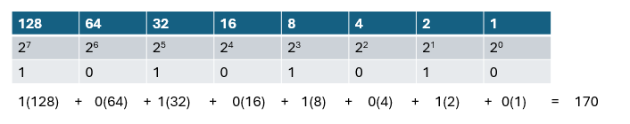
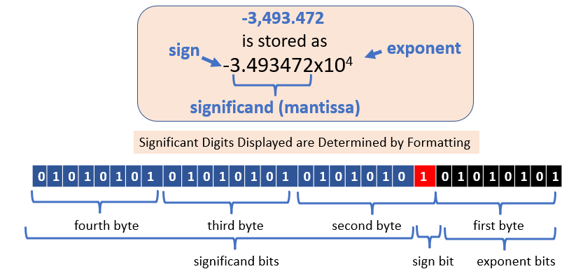
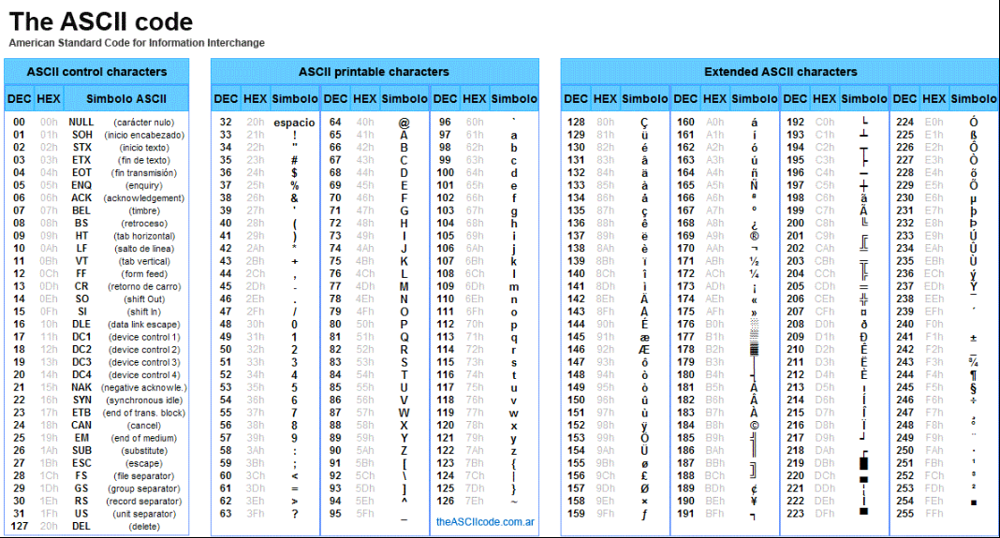
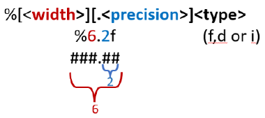

1. Primative Data Structures#
Learning Objectives#
Understand how integers, floats and strings are stored in memory as binary strings.
Understand differences in primitive numeric data structures
Understand strings
formatting
indexing
slicing
concatenation
Data Structure |
Description |
|---|---|
|
Represents whole numbers (positive, negative, or zero). Example: |
|
Represents decimal (floating-point) numbers. Example: |
|
Represents numbers with real and imaginary parts. Example: |
|
Represents truth values, either |
|
Represents immutable sequences of Unicode characters (text data). Example: |
|
Represents immutable sequences of raw bytes. Example: |
1. Integers#
Integers are whole numbers and represented as binary bit strings where each cell is 2\(^n\)

Arbitrary Precision#
In many languages like C and Java the size of an integer is limited by the number of bites in a memory block, so a 32 bit chip would have have 2\(^31\) memory cells available to represent the number with the last one being for the sign. Python though has arbitrary precision where the number of cells can be extended and so the size on an integer is limited by the available memory. It should also be noted that the sign is actually in the metadata of the PyLongObject used to store integers in the heap memory.
The following program has arbitrary precision. When you run the following cell you will be prompted to input a binary sequence of arbitrary length and it will convert it to decimal. I suggest you try the following values 1 10 100 110
Interactive Input Disabled for Book Build
The following cell normally asks for user input using `input()` , but Jupyter Book cannot compile cells that require manual input, so the input lines have been commented out.
To try this interactively in a Jupyter Notebook:
Uncomment the line
#binary_input = input("Enter an eight digit binary number (e.g., 10110011): ").strip().Comment out the line under
binary_input = "01010101"(note this is not necessary due to the order of execution but best practice)
This will allow you to enter values manually when you run the cell in a Jupyter Notebook. Note shift+enter will not move you to the next cell if there is input and you need to use esc + down-arrow to move to the next cell without executing the input function.
def binary_to_decimal(binary_list):
"""
Converts a binary list to its decimal equivalent.
:param binary_list: List of integers (0s and 1s) representing a binary number.
:return: The decimal equivalent of the binary number.
"""
decimal_value = 0
num_bits = len(binary_list)
# Loop through the binary list
for i in range(num_bits):
# Get the value at position i (0 or 1)
bit = binary_list[i]
# Calculate the power of 2 based on position (from most to least significant)
power = num_bits - 1 - i
# Add the value to the total if the bit is 1
if bit == 1:
decimal_value += 2 ** power
return decimal_value
binary_input = "01010101"
# Uncomment the Following Line to Prompt user for input
#binary_input = input("Enter an eight digit binary number (e.g., 10110011): ").strip()
# Convert input string to a list of integers
binary_list = [int(bit) for bit in binary_input]
# Validate the input
if any(bit not in (0, 1) for bit in binary_list):
print("Error: Please enter a binary number consisting only of 0s and 1s.")
else:
# Optionally pad to a fixed length if needed
# (not required for the calculation but can help in specific contexts)
padded_length = 8 # Define desired length (optional)
if len(binary_list) < padded_length:
binary_list = [0] * (padded_length - len(binary_list)) + binary_list
# Convert to decimal and display results
decimal_value = binary_to_decimal(binary_list)
print(f"Binary: {binary_list}")
print(f"Decimal: {decimal_value}")
Binary: [0, 1, 0, 1, 0, 1, 0, 1]
Decimal: 85
Table of built-in functions that operate on integers#
Function |
Description |
|---|---|
|
Returns the absolute value of the integer |
|
Converts the integer |
|
Converts the integer |
|
Returns a tuple |
|
Converts the integer |
|
Formats the integer |
|
Converts the integer |
|
Returns the memory address of the integer |
|
Converts |
|
Returns |
|
Returns the length of a collection or iterable. Does not apply directly to integers but useful for sequences. |
|
Returns the largest value from the given arguments, which may include integers. |
|
Returns the smallest value from the given arguments, which may include integers. |
|
Converts the integer |
|
Returns |
|
Returns the string representation of the integer |
|
Rounds the integer |
|
Converts the integer |
|
Sums all the elements in the iterable, which may include integers. |
|
Returns the type of |
2. Floats#
The bit string of a float consists of three parts, the significand and exponent bits, which are like scientific notation, and a sign bit

Common Built-in Functions for float
Function |
Description |
|---|---|
|
Returns the absolute value of the float. |
|
Rounds the float to |
|
Converts the float to an integer by truncating the decimal part. |
|
Converts a number or string to a float. |
|
Returns |
|
Returns the largest of the arguments, which can include floats. |
|
Returns the smallest of the arguments, which can include floats. |
|
Returns the sum of a sequence of numbers, including floats. |
3. Complex Numbers#
or
\(a\) is the real part.
\(b\) is the imaginary part.
\(i = \sqrt{-1}\)
Note, the real and imaginary parts are stored as floats.
Note, engineers often use j as the imaginary part, as do many python modules.
Complex Plane#
horizontal axis corresponds to real part (a)
vertical axis corresponds to imaginary part (b)
The following code shows an interactive graph for calculating the magnitude of complex numbers in a complex plane
# you may need to install ipywidgets from the cmd line
#open your terminal and activate your env, then run:
#conda install -c conda-forge ipywidgets
import numpy as np
import matplotlib.pyplot as plt
from ipywidgets import interactive
import ipywidgets as widgets
def plot_complex(real, imag):
# Create the complex number
z = complex(real, imag)
# Calculate magnitude
magnitude = abs(z)
# Create figure and axis
fig, ax = plt.subplots(figsize=(5, 5))
# Plot the point
ax.scatter([z.real], [z.imag], color='blue', s=100, label=f'{z}')
# Plot vector from origin to point
ax.plot([0, z.real], [0, z.imag], 'b-', linewidth=2)
# Add grid and axes
ax.grid(True)
ax.axhline(y=0, color='k', linestyle='-', linewidth=0.5)
ax.axvline(x=0, color='k', linestyle='-', linewidth=0.5)
# Set equal aspect ratio
ax.set_aspect('equal')
# Set limits with some padding
limit = max(abs(real), abs(imag), 5) + 1
ax.set_xlim(-limit, limit)
ax.set_ylim(-limit, limit)
# Labels and title
ax.set_xlabel('Real Part')
ax.set_ylabel('Imaginary Part')
ax.set_title(f'Complex Number: {z}\nMagnitude: {magnitude:.2f}')
# Add legend
ax.legend()
plt.show()
# Create interactive widget
interactive_plot = interactive(
plot_complex,
real=widgets.FloatSlider(min=-10, max=10, step=0.1, value=3),
imag=widgets.FloatSlider(min=-10, max=10, step=0.1, value=4)
)
# Display the interactive plot
display(interactive_plot)
z = 3 + 4j
print(type(z)) # <class 'complex'>
print(z.real) # 3.0
print(z.imag) # 4.0
<class 'complex'>
3.0
4.0
Complex Conjugate#
the complex conjugate of a value is taken by changing the sign of the imaginary part.
Complex number: $\(z = a + bi\)\( Complex conjugate of z: \)\(\overline{z} = a - bi\)$
Table 1: Attributes of complex#
Attribute |
Description |
|---|---|
|
Returns the real part of the complex number. |
|
Returns the imaginary part of the complex number. |
Table 2: Methods of complex#
Method |
Description |
|---|---|
|
Returns the complex conjugate of the number. |
Table 3: Common Built-in Functions for complex#
Function |
Description |
|---|---|
|
Returns the magnitude (absolute value) of the complex number |
|
Creates a complex number with the specified real and imaginary parts. |
|
Converts the real part of the complex number |
|
Converts the real part of the complex number |
|
Returns the memory address of the complex number |
|
Returns |
|
Computes |
|
Returns the string representation of the complex number |
|
Converts the complex number |
|
Returns the type of |
4. Boolean#
Boolean are logic values that can have two values, True of False
0=False 1=True
Boolean Operators#
Operator |
Type |
Description |
|---|---|---|
|
Boolean |
Logical AND: Returns |
|
Boolean |
Logical OR: Returns |
|
Boolean |
Logical NOT: Negates a boolean value. Often represented as ¬. |
|
Comparison |
Equality: Returns |
|
Comparison |
Inequality: Returns |
|
Comparison |
Less Than: Returns |
|
Comparison |
Greater Than: Returns |
|
Comparison |
Less Than or Equal To: Returns |
|
Comparison |
Greater Than or Equal To: Returns |
|
Identity |
Identity: Returns |
|
Identity |
Not Identity: Returns |
|
Membership |
Membership: Returns |
|
Membership |
Not Membership: Returns |
Boolean values are singletons, which mean they always have the same location in memory
print(id(True)) # Always the same memory address
print(id(False))
print(id(3))
106438831589088
106438831589056
128075655282992
# Booleans are singletons
print("Booleans:")
print(f"id(True): {id(True)}")
print(f"id(False): {id(False)}")
print(f"True is True: {True is True}")
print()
# Small integers are also singletons (cached from -5 to 256 in CPython)
print("Small integers (within cache range -5 to 256):")
a = 100
b = 100
print(f"id(100): {id(a)} == {id(b)}")
print(f"a is b: {a is b}")
print()
# Larger integers are not necessarily singletons
print("Larger integers (outside cache range):")
x = 1000
y = 1000
print(f"id(1000): {id(x)} != {id(y)}")
print(f"x is y: {x is y}")
print()
# But forcing identity with assignment
print("Same object via direct assignment:")
z = x
print(f"x is z: {x is z}")
Booleans:
id(True): 106438831589088
id(False): 106438831589056
True is True: True
Small integers (within cache range -5 to 256):
id(100): 128075655286096 == 128075655286096
a is b: True
Larger integers (outside cache range):
id(1000): 128073698613968 != 128073698614704
x is y: False
Same object via direct assignment:
x is z: True
Most objects are not singletons and their memory location is dynamically generated. Other singletons are pre-cached integers -5 to 256
**Note the memory location of the True/False Boolean values for the above two codes blocks is the same.
Truth Tables#
What is a Truth Table?#
A truth table is a mathematical table used to represent the output of logical operations for all possible input combinations. They are essential in understanding boolean algebra and logic gates.
Truth Table for AND (and)#
The and operation returns True only if both inputs are True.
A |
B |
A and B |
|---|---|---|
|
|
|
|
|
|
|
|
|
|
|
|
Truth Table for OR (or)#
The or operation returns True if at least one input is True.
A |
B |
A or B |
|---|---|---|
|
|
|
|
|
|
|
|
|
|
|
|
Truth Table for NOT (not)#
The not operation inverts the boolean value.
A |
not A |
|---|---|
|
|
|
|
Strings#
Strings are sequences of characters inside of quotes, and typically represent text. Many data files are converted to strings when transmitted across the web. When you input a number using the input function input() it is a string.
Strings in Python:
Stored as Unicode code points internally.
Encoded to formats like UTF-8 or ASCII when converted to bytes.
ASCII:
ASCII American Standard Code for Information Interchange - was developed in the early days of computers and is based on the 8-bit byte.
Original ascii was 7 bits
Extended ascii was full 8 bits

ASCII code CC BY-SA Yuriy Arabskyy
{kind=link}
UTF-8
Unicode Transformation Format - 8-bit
ASCII characters (basic Latin letters, numbers, and symbols) using a single byte (8 bits).
Non-ASCII characters (like accented letters, emoji, or characters from other scripts) using 2 to 4 bytes.
Key features:
Backward compatibility with ASCII: Characters in the ASCII range (0-127) are encoded identically in UTF-8.
Variable length: Characters outside the ASCII range use additional bytes (2-4 bytes).
Efficient storage: Common characters take fewer bytes, while less-common ones use more.
The following program converts ascii characters to a bit string, or a bit string to its ascii character
# Function to convert an ASCII character to a bit string
def ascii_to_bitstring(char):
if len(char) != 1 or ord(char) > 127:
raise ValueError("Input must be a single ASCII character (0-127).")
return format(ord(char), '08b') # 8 bits for ASCII
# Function to convert a bit string to an ASCII character
def bitstring_to_ascii(bitstring):
if len(bitstring) != 8 or not all(bit in '01' for bit in bitstring):
raise ValueError("Input must be an 8-bit binary string.")
return chr(int(bitstring, 2))
# Simulate user input for book build
choice = '1' # Change to '2' to test other direction
char = 'A' # Used if choice == '1'
bitstring = '01000001' # Used if choice == '2'
# Uncomment the following lines to enable interactive use
# choice = input("Enter 1 or 2: ")
# if choice == '1':
# char = input("Enter an ASCII character: ")
# elif choice == '2':
# bitstring = input("Enter an 8-bit binary string: ")
# Main logic
if choice == '1':
try:
print(f"Bit string: {ascii_to_bitstring(char)}")
except ValueError as e:
print(e)
elif choice == '2':
try:
print(f"ASCII character: {bitstring_to_ascii(bitstring)}")
except ValueError as e:
print(e)
else:
print("Invalid choice.")
Bit string: 01000001
#choice = input("Enter 1 or 2: ")
#if choice == '1':
# char = input("Enter an ASCII character: ")
#elif choice == '2':
# bitstring = input("Enter an 8-bit binary string: ")
Strings as a Datatype#
Strings use single, double or triple quotes.
triple quote strings span multiple lines and are known as docstrings if placed at the beginning of a script.
Strings can be concatenated (“1” + “1” becomes “11”).
Strings are ordered
Strings can be indexed.
Strings can be reverse indexed.
Strings are immutable.
Can not change items in a string (do not support reassignment).
Can be reassigned by slicing and concatenation (you are in effect making a new string).
#This code shows the three ways of inputing the number "one"
print(f'1 is {type(1)}')
print(f'1.0 is {type(1.)}')
print(f'"1" is {type("1")}')
1 is <class 'int'>
1.0 is <class 'float'>
"1" is <class 'str'>
Input function returns strings: the following code inputs a float and assigns it to the variable var, but when we check its type, is is a string. So you must always convert values users input to floats or integers if those are the type of value you want.
Note: Input functions pause the code execution until the value is inputted and Jupyter does not auto-move to the next cell.
After inputting the value with normal enter you are returned to the same cell. To move to the next cell try shift+down-arrow.
# This code shows that input what looks like a float is really a number
var = '1.0' # simulate user input from input()
#var=input("enter the number 1.0, be sure to include the point zero")
print(f'The value of var is {var}, which is of type {type(var)}.')
The value of var is 1.0, which is of type <class 'str'>.
#var=input("enter the number 1.0, be sure to include the point zero")
print(f'var + var = {var + var}')
var + var = 1.01.0
To input it as a float, we could convert it to a float in the input statement
var = 1.0
#var = float(input("enter the number 1.0, be sure to include the point zero"))
print(f'{var} is of type {type(var)}.')
print(f'var + var = {var + var}.')
1.0 is of type <class 'float'>.
var + var = 2.0.
1+1
2
1.0 + 1.0
2.0
"1.0" + "1.0"
'1.01.0'
Note: you can add a float to an integer, but you can not add a string to either a float or an integer
1 + 1.0
2.0
The following code will give a type error as you are adding a string to an integer
"1" + 1
#1 + '1.0'
#this does not work, but change '1.0' to float('1.0')
#1 + '1.0'
1 + float("1")
2.0
Note in the next cell the first * is the multiplicative operator, while the second * is the string symbol for a star.
#note the first * is the multiplication operator and the second is a string
print(20*"*")
********************
Escape Sequences#
An escape sequence is when a character in a string literally follows a black slash and gives python special meaning. For example, a string literal that starts with a single quote is terminated by the second single quote,, unless it is written as an escape sequence
Escape Sequence |
Description |
|---|---|
|
Single quote |
|
Double quote |
|
Backslash |
|
Newline |
|
Horizontal tab |
|
Carriage return |
|
Backspace |
|
Form feed |
|
Vertical tab |
Note, \n moves the cursor to a new line, \r moves it to the beginning of the current line and allows for overwriting of text.
print('Li\tBe\tB\n3\t4\t5\n\n\nNa\tMg\tAl\n11\t12\t13')
Li Be B
3 4 5
Na Mg Al
11 12 13
Formatting Strings#
There are three basic string formatting methods
f-string method
.format() method
modulus method
The f-string method will be our preferred method, and the only formatting method I expect you to be able to code with. but you need to be aware of the other methods so you know what is going on if you find code that uses them.
Comparing string format methods#
the following code does the same thing using each method. In this class we will need to be able to use f-string, but you need to know about the other methods
name = "Neon"
atomic_number = 10
print(f"The atom {name} has an atomic number of {atomic_number}.")
print("The atom {} has an atomic number of {}.".format(name, atomic_number))
print("The atom %s has an atomic number of %d." % (name, atomic_number))
The atom Neon has an atomic number of 10.
The atom Neon has an atomic number of 10.
The atom Neon has an atomic number of 10.
f-string method#
Introduced in Python 3.6
Place f in front of string
indicate variables with {}
Allows you to skip the .format() step
molecule = "hydrogen"
molarmass = 1.00794
mass = 10
moles = mass/molarmass
print(f'{mass} grams of the molecule {molecule} has {moles} moles.\n \t{mass} \
grams of the molecule {molecule} has {moles} moles. \n \
\t\t{mass} grams of the molecule {molecule} has {moles} moles.\n \
\t\t\t the molar mass of hydrogen is {molarmass}.\n \
This is the last line.')
10 grams of the molecule hydrogen has 9.921225469770025 moles.
10 grams of the molecule hydrogen has 9.921225469770025 moles.
10 grams of the molecule hydrogen has 9.921225469770025 moles.
the molar mass of hydrogen is 1.00794.
This is the last line.
note in the above print statement each line but the last has a . What does that do? remove it from one line and see what happens? If needed, ask your AI.
variable=12345.6789
print(f'12345678901234567890')
print(f'{variable:.4f}\n{variable:.2f}')
print(f'12345678901234567890')
print(f'{variable:10.2f}\n{variable:11.2f} \n{variable:11.3f}')
12345678901234567890
12345.6789
12345.68
12345678901234567890
12345.68
12345.68
12345.679
print(f"How long is this number going to be {1234.5678:2.3f}")
How long is this number going to be 1234.568
.format() method#
This is more common and you will see lots of examples that use the .format() method
Generic Syntax
“text {} text {} text {}.” .format(var1, var2, var3)
Can use index numbers Place width and precision in curly brackets ({}).
#Demonstration of use of index numbers in .format() method
atom1, atom2, atom3 = "Hydrogen", "Helium", "Lithium"
print("This string has order first, second, third variable {} {} {}."\
.format(atom1,atom2,atom3))
print("This string has order third variable {2}, second variable {1} "\
"first variable {0}.".format(atom1, atom2, atom3))
print("This string has order first variable {0}, second variable {1} "\
"first variable {0}.".format(atom1, atom2, atom3))
This string has order first, second, third variable Hydrogen Helium Lithium.
This string has order third variable Lithium, second variable Helium first variable Hydrogen.
This string has order first variable Hydrogen, second variable Helium first variable Hydrogen.
#Demonstration of use of width and precision of .format() method
print("{0:10}|{1:10}\n{2:10}|{3:10}\n1234567890|1234567890"\
.format("hydrogen",1.00784, "helium", 4.002602))
print(10*" * ")
print("{0:10}|{1:10.3f}\n{2:10}|{3:10.3f}".format("hydrogen",1.00784, "helium", 4.002602))
hydrogen | 1.00784
helium | 4.002602
1234567890|1234567890
* * * * * * * * * *
hydrogen | 1.008
helium | 4.003
#left aligned spaced at 15 digits
print("{0:<15}|{0:<15}".format("left align", "center align", "right align"))
#left then right aligned spaced at 15 digits
print("{0:<15}|{2:>15}".format("left align", "center align", "right align"))
#center aligned spaced at 15 digits
print("{1:^15}|{1:^15}".format("left align", "center align", "right align"))
left align |left align
left align | right align
center align | center align
Modulus (%) Method#
This is the oldest form of formatting and we will seldom use it. But you need to be aware of it in the event you find some old code that uses this method
Generic Syntax

print("The molar mass of hydrogen is: %1.2f"%(1.00784))
print("The molar mass of hydrogen is: %10.2f"%(1.00784))
print("The molar mass of hydrogen is: %1.0f"%(1.00784))
print("The molar mass of hydrogen is: %1.5f"%(1.00784))
The molar mass of hydrogen is: 1.01
The molar mass of hydrogen is: 1.01
The molar mass of hydrogen is: 1
The molar mass of hydrogen is: 1.00784
#here we are assigning two variables in one line, and then printing them in a line
entity, molar_mass="water", 18.01528
print("The molar mass of %s is %.3f g/mol." %(entity,molar_mass))
print("The molar mass of %s is %.5f g/mol." %(entity,molar_mass))
print("The molar mass of %s is %.3d g/mol." %(entity,molar_mass))
The molar mass of water is 18.015 g/mol.
The molar mass of water is 18.01528 g/mol.
The molar mass of water is 018 g/mol.
Can you explain why the last line above makes no sense? Hint, d stands for decimal integer, that is a base 10 integer (and not a float). Ask you AI if you need further help.
String Functions#
Table of String Functions#
Function |
Description |
|---|---|
|
Returns the length of the string |
|
Returns the character with the highest ASCII value in the string |
|
Returns the character with the lowest ASCII value in the string |
|
Returns the Unicode code point of a character |
|
Returns the character represented by a Unicode code point |
|
Returns a string representation of an object |
String Methods#
Table of String Methods#
Method |
Description |
|---|---|
|
Returns a copy of the string with its first character capitalized |
|
Returns a casefolded copy of the string |
|
Returns a centered string |
|
Returns the number of non-overlapping occurrences of substring |
|
Returns an encoded version of the string |
|
Returns True if the string ends with the specified suffix |
|
Returns a copy of the string where all tab characters are replaced |
|
Returns the lowest index of substring if found |
|
Formats the string |
|
Like find(), but raises ValueError when the substring is not found |
|
Returns True if all characters in the string are alphanumeric |
|
Returns True if all characters in the string are alphabetic |
|
Returns True if all characters in the string are decimal |
|
Returns True if all characters in the string are digits |
|
Returns True if all cased characters in the string are lowercase |
|
Returns True if all characters in the string are numeric |
|
Returns True if all characters in the string are whitespaces |
|
Returns True if the string follows the rules of a title |
|
Returns True if all cased characters in the string are uppercase |
|
Joins the elements of an iterable to the end of the string |
|
Returns a left-justified string |
|
Returns a copy of the string converted to lowercase |
|
Returns a copy of the string with leading characters removed |
|
Returns a tuple containing the part before the separator, the separator itself, and the part after the separator |
|
Returns a copy of the string where all occurrences of old have been replaced by new |
|
Returns the highest index of substring if found |
|
Like rfind(), but raises ValueError when the substring is not found |
|
Returns a right-justified string |
|
Returns a tuple containing the part before the separator, the separator itself, and the part after the separator |
|
Returns a list of words in the string, using sep as the delimiter string |
|
Returns a copy of the string with trailing characters removed |
|
Returns a list of words in the string, using sep as the delimiter string |
|
Returns a list of the lines in the string, breaking at line boundaries |
|
Returns True if the string starts with the specified prefix |
|
Returns a copy of the string with leading and trailing characters removed |
|
Returns a copy of the string with uppercase characters converted to lowercase and vice versa |
|
Returns a titlecased version of the string |
|
Returns a copy of the string in which each character has been mapped through the given translation table |
|
Returns a copy of the string converted to uppercase |
|
Returns a copy of the string padded with zeros |
Examples of string.methods#
.capitalize()#
name = "chemistry class"
print(name.capitalize())
Chemistry class
.find()#
text = 'Chemistry is the best course'
print(text.find('best'))
#notice how it returns the index number
17
.join()#
text = ['Chemistry', 'is', 'the', 'best', 'class']
#the above is a list (container type data structure) of strings
space = " "
print(space.join(text))
new_text = space.join(text)
print(text)
print(f'The type of {text} is {type(text)}.')
print(new_text)
print(f'The type of "{new_text}" is {type(new_text)}.')
Chemistry is the best class
['Chemistry', 'is', 'the', 'best', 'class']
The type of ['Chemistry', 'is', 'the', 'best', 'class'] is <class 'list'>.
Chemistry is the best class
The type of "Chemistry is the best class" is <class 'str'>.
.lstrip(’ ‘)#
text = ",,,,,Hello world"
x = text.lstrip(",")
print(x)
print(type(x))
Hello world
<class 'str'>
.replace(‘old_word’,’new_word’)#
text = 'Ozone Oxygen Butane'
new_text = text.replace('Butane', 'Hydrogen')
print(new_text)
print(f'The memory heap location of text is {id(text)}. \
\nThe memory heap location of new_text is {id(new_text)}.')
Ozone Oxygen Hydrogen
The memory heap location of text is 128073697902960.
The memory heap location of new_text is 128073696273440.
.rstrip(‘delimeter’,max number of splits from right)#
text = "a,b,c,d,e"
x = text.rsplit(",",2)
y = text.rsplit(",",1)
z = text.rsplit(",")
print(x)
print(y)
print(z)
print(f'text is {type(text)}.\nx is {type(x)}.')
['a,b,c', 'd', 'e']
['a,b,c,d', 'e']
['a', 'b', 'c', 'd', 'e']
text is <class 'str'>.
x is <class 'list'>.
.split(‘delimiter’,max from left)#
text = "a,b,c,d,e"
x = text.split(",",2)
y = text.split(",",1)
z = text.split(",")
print(x)
print(y)
print(z)
print(f'text is {type(text)}.\nx is {type(x)}.')
['a', 'b', 'c,d,e']
['a', 'b,c,d,e']
['a', 'b', 'c', 'd', 'e']
text is <class 'str'>.
x is <class 'list'>.
Assign variables on a split
filename = "report.final.version.pdf"
name, ext = filename.rsplit(".", 1)
print(name) # 'report.final.version'
print(ext) # 'pdf'
report.final.version
pdf
text = "Pythonnnnnn"
print(text.rstrip('n'))
Pytho
Note, -1 means no limit and is the same as split()
text = 'This programming langauge is cool'
x = text.split(None,-1)
print(x)
x=text.split()
print(x)
x = text.split(None,1)
print(x)
x = text.split(None,2)
print(x)
['This', 'programming', 'langauge', 'is', 'cool']
['This', 'programming', 'langauge', 'is', 'cool']
['This', 'programming langauge is cool']
['This', 'programming', 'langauge is cool']
text1 = 'python programming class'
print(text1.title())
text2 = 'pyTHoN proGraMMinG clAsS'.title()
print(text2.title())
Python Programming Class
Python Programming Class
String Indexing#
Indexing#
In python each character has a string index position, that can be accessed with brackets [index]. The initial index is zero and increases going left to right. You can also reverse index starting from the right most position with value [-1]
Character |
B |
o |
r |
o |
n |
|---|---|---|---|---|---|
Index |
0 |
1 |
2 |
3 |
4 |
Index |
-5 |
-4 |
-3 |
-2 |
-1 |
Slicing#
Slicing is a way of taking slices of a string. The format is
word[ i : j : stride ]
i is the initial index digit and is inclusive (included in the output)
j is the final index digit and is exclusive (excluded in the output)
stride is the value of increment, which is 1 if omitted.
Indexing & Slicing Summary Table#
Operation |
Syntax |
Explanation |
Example ( |
Output |
|---|---|---|---|---|
Positive Indexing |
|
Access the character at index |
|
|
Negative Indexing |
|
Access from the end (last = |
|
|
Slicing (Start to End, Exclusive) |
|
Extracts characters from |
|
|
Omitting Start |
|
Starts from index |
|
|
Omitting End |
|
Goes to the end of the string |
|
|
Full Slice |
|
Copies the entire string |
|
|
Skipping Steps |
|
Extracts characters with |
|
|
Reversing a String |
|
Returns the string in reverse order |
|
|
element1 = "barium"
element2 = 'chlorine'
print(element1[0:3])
print(element2[-1:-4:-1])
print(element2[-3:-1])
print(element2[-3:])
bar
eni
in
ine
String Indexing, Slicing and Concatenation#
In the following examples we will use reverse indexing to slice off the base ending of an element name and add the suffix of an ion of that element. At a later stage we will build an app that builds up on this and names ions from their base elements.
# Base compound names
element1 = "Chlorine"
element2 = "Sulfur"
element3 = "Phosphorus"
# Slicing to remove suffixes
chloride = element1[: -3] + "ide" # Removing "ine" → "Chloride"
sulfate = element2[: -2] + "ate" # Removing "ur" → "Sulfate"
phosphite = element3[: -4] + "ite" # Removing "us" → "Phosphite"
# Display results
print(f"Base Element: {element1} → Ion Name: {chloride}")
print(f"Base Element: {element2} → Ion Name: {sulfate}")
print(f"Base Element: {element3} → Ion Name: {phosphite}")
Base Element: Chlorine → Ion Name: Chloride
Base Element: Sulfur → Ion Name: Sulfate
Base Element: Phosphorus → Ion Name: Phosphite
Strings are immutable#
we learned earlier that strings are immutable, that is, once created they can not be changed, and it looks like in the above example we changed the strings, but we did not. Instead, we made new ones, as shown by adding some code to print out the memory address. So the ion is really a new object, and the original object still exists.
# Base compound names
element1 = "Chlorine"
element2 = "Sulfur"
element3 = "Phosphorus"
# Slicing to remove suffixes
chloride = element1[: -3] + "ide" # Removing "ine" → "Chloride"
sulfate = element2[: -2] + "ate" # Removing "ur" → "Sulfate"
phosphite = element3[: -4] + "ite" # Removing "us" → "Phosphite"
# Display results
print(f"Base Element: {element1} → Ion Name: {chloride}")
print(f"Note,\t {element1} has memory address {id(element1)} while, \n\t {chloride} has memory address {id(chloride)}.")
print(f"\nBase Element: {element2} → Ion Name: {sulfate}")
print(f"Note,\t {element2} has memory address {id(element1)} while, \n\t {sulfate} has memory address {id(sulfate)}.")
print(f"\nBase Element: {element3} → Ion Name: {phosphite}")
print(f"Note,\t {element3} has memory address {id(element1)} while, \n\t {phosphite} has memory address {id(phosphite)}.")
Base Element: Chlorine → Ion Name: Chloride
Note, Chlorine has memory address 128073560169520 while,
Chloride has memory address 128073560176560.
Base Element: Sulfur → Ion Name: Sulfate
Note, Sulfur has memory address 128073560169520 while,
Sulfate has memory address 128073560177136.
Base Element: Phosphorus → Ion Name: Phosphite
Note, Phosphorus has memory address 128073560169520 while,
Phosphite has memory address 128073560177200.
Acknowledgements#
This content was developed with assistance from Perplexity AI and Chat GPT. Multiple queries were made during the Fall 2024 and the Spring 2025.